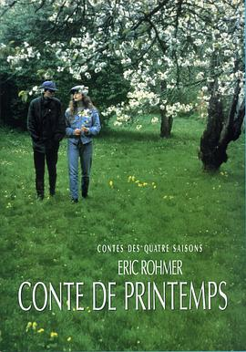

春天的故事 / Conte de printemps
又名：人间四季：春 / A Tale of Springtime
一种观感，法语是一门适合讨论哲学的语言；每一部的公寓布置都很好看
作品信息
| 导演 | 埃里克·侯麦 |
| 编剧 | 埃里克·侯麦 |
| 主演 | 安娜·特塞德雷 / 休格·奎斯特 / 弗洛朗丝·达雷尔 / 露易丝.贝内特 / 索菲.罗宾 / Marc Lelou / François Lamore |
| 类型 | 剧情 / 喜剧 / 爱情 |
| 制片国家/地区 | 法国 |
| 语言 | 法语 |
| 上映日期 | 1990-04-04 |
| 片长 | 108分钟 |
| IMDb | tt0097106 |
最后一次看到是 2026-08-12T21:11:21+08:00 · 豆瓣原页